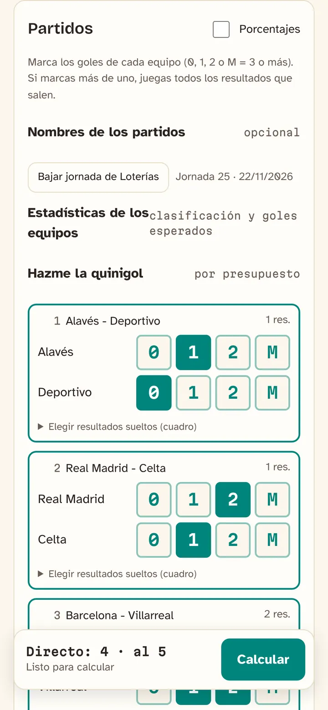

El Quinigol
App independiente. Combinario no es oficial ni tiene relación con Loterías y Apuestas del Estado (SELAE). No vende apuestas: solo te ayuda a prepararlas, y se validan y se pagan en un punto de venta. Solo para mayores de 18 años.
En la app se llama CombiGol. Son 6 partidos y en cada uno marcas los goles de cada equipo: 0, 1, 2 o M (3 o más).
Marcar los goles
Cada partido va en su recuadro, con una fila para el equipo de casa y otra para el de fuera, como en el boleto. Si marcas más de un resultado en un equipo, juegas todos los resultados que salen (se multiplican).

Tipo de apuesta
- Directa: todas las combinaciones de lo que marcas.
- Propia: la app reduce con la garantía que elijas; si tu jugada está en su catálogo de reducidas, usa ese sistema.
- Mejores y Al azar, como en la Quiniela.
Cómo se cuentan las apuestas de la directa: en cada equipo, multiplica cuántos resultados marcas. Por ejemplo, si en 5 partidos marcas un solo resultado por equipo y en el sexto marcas dos resultados para el equipo de casa y uno para el de fuera, son 2 apuestas (2,00 €); con dos partidos así, 2 × 2 = 4 apuestas (4,00 €).
También tienes los % jugados de Loterías, «Hazme la quinigol» por presupuesto, estadísticas de los equipos, escrutinio de prueba y «¿Qué resultados me convienen?». El máximo de un boleto son 3.072 apuestas; la app avisa antes.